Walkthrough
See the course in under two minutes
2 short narrated tours, one per version of the course, with captions built in.
- Audience
- Hospital nurses; aged care nurses and care staff; NDIS disability support workers
- Format
- Browser-based branching scenarios with voiced characters
- Structure
- Asthma on the Ward: 4 micro-lessons · Aged care and NDIS: 5 lessons each
- Sources
- National Asthma Council Australia · Australian Asthma Handbook
- Accessibility
- Keyboard, screen reader, reduced motion, light and dark themes
My role
What I did on this project
Workplace project, built for an organisation’s internal staff.
Challenge & context
Staff normalise night-time symptoms, miss triggers, mishandle inhalers, follow out-of-date action plans and hesitate in a severe attack. In the NDIS version, workers are often alone in a participant’s home.
Instructional strategy
Each lesson shows a situation, asks for one decision (A, B or C), plays the consequence, then gives a debrief and "On the floor" actions. Learners can replay the other options.
Content & compliance
First aid and medication content aligned to National Asthma Council Australia guidance. The NDIS course keeps the participant’s choice and control and their own action plan at the centre of every lesson.
Interactive features
Fully voiced characters with Pause, Next line and Restart controls, time-of-day scene lighting, A/B/C branching with realistic consequences, and structured debriefs.
Interface
Interface mockups for Asthma on the Ward, the hospital nursing course, in light and dark mode at desktop (1280) and mobile (390) sizes. Select any screen to enlarge it.
Light mode
6 screens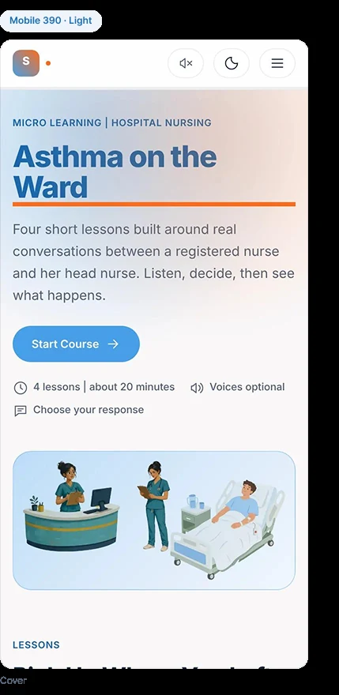
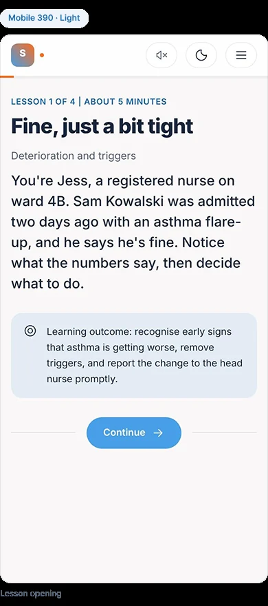
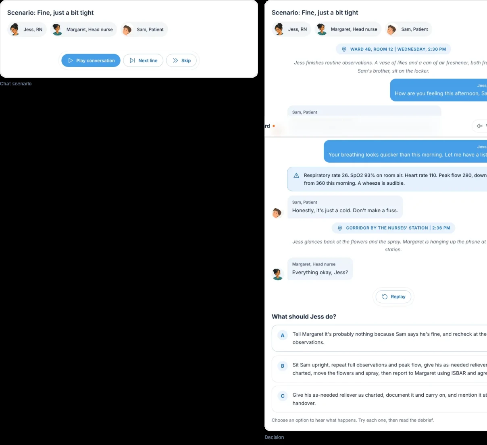
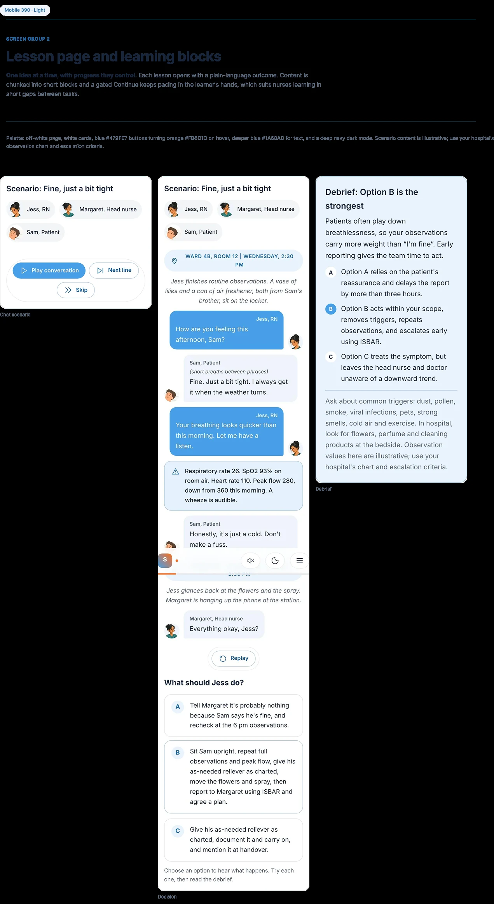
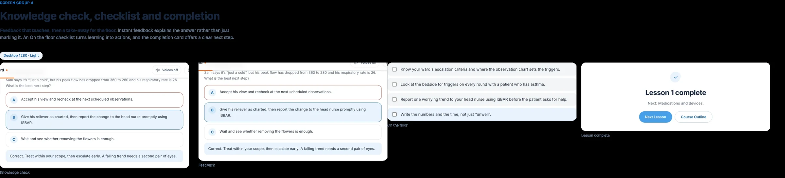
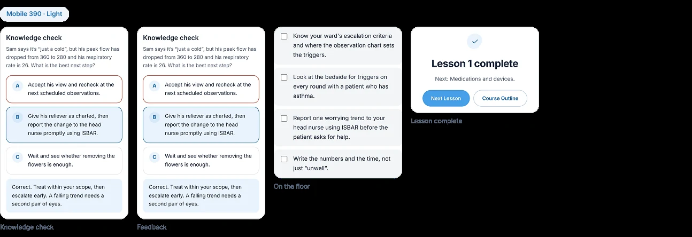
Dark mode
8 screens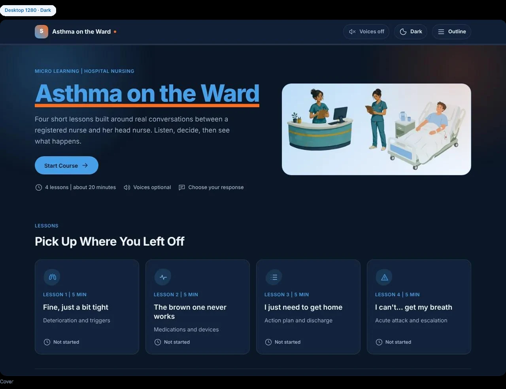
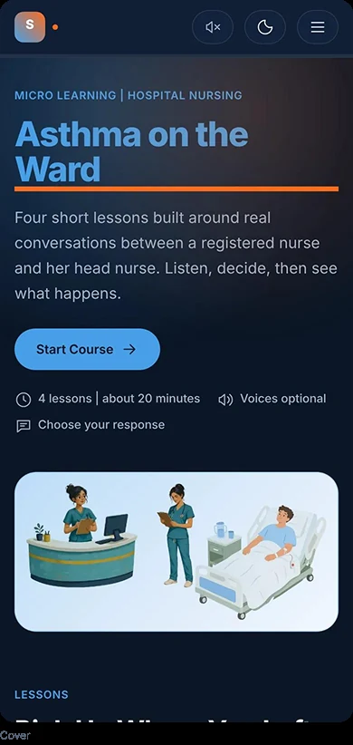
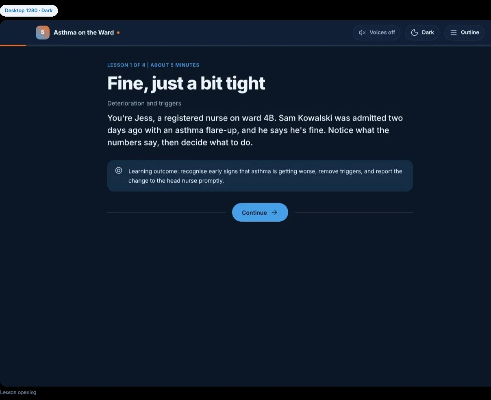
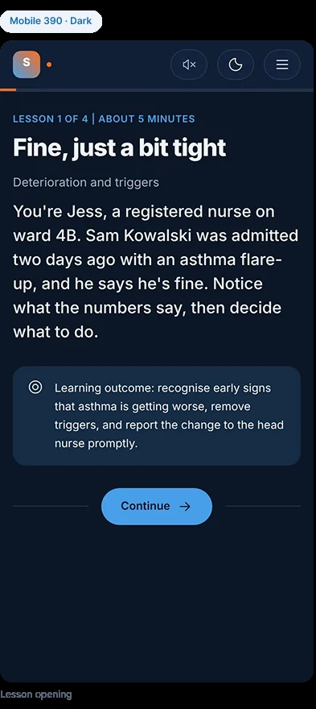
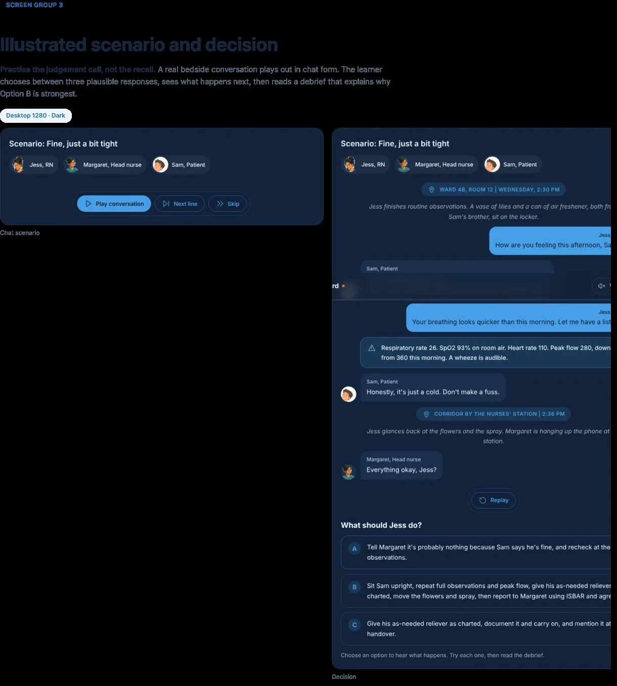
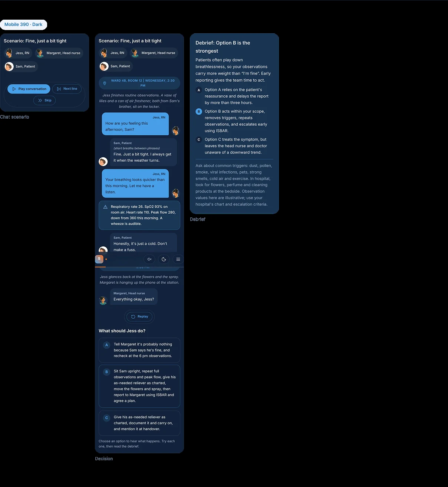
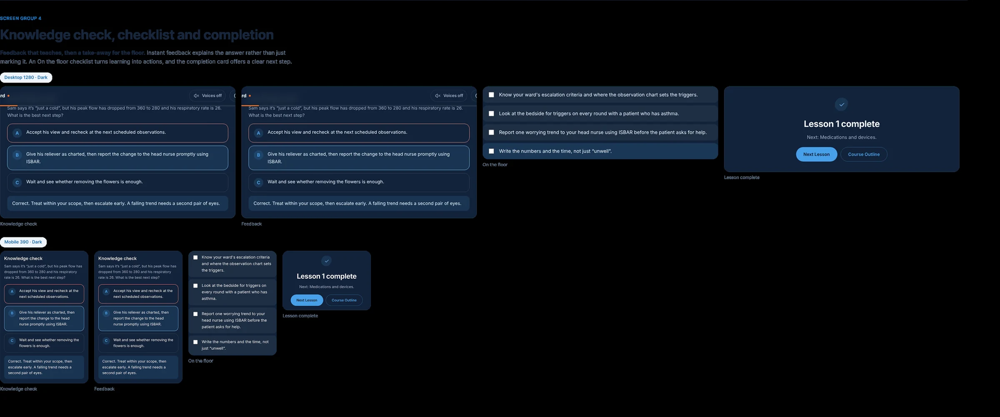
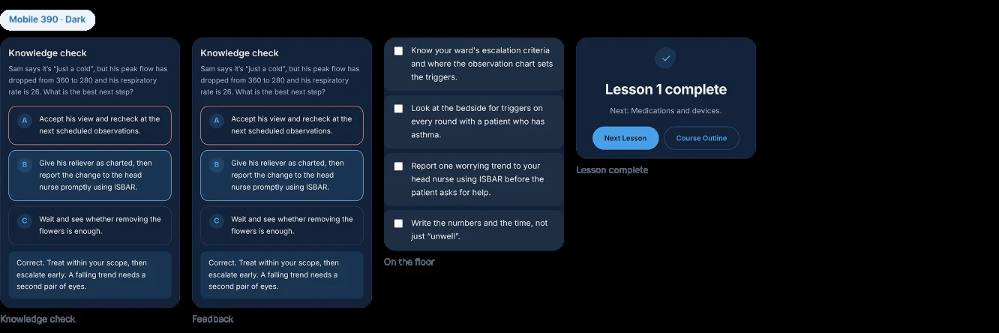